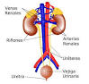

Sistema Urinario
Regresar
El sistema urinario humano es un conjunto de órganos encargados de la producción de orina mediante la cual se eliminan los desechos nitrogenados del metabolismo (urea, creatinina y ácido úrico), y de la osmorregulación. Su arquitectura se compone de estructuras que filtran los fluidos corporales (líquido celomático, hemolinfa, sangre). En los invertebrados la unidad básica de filtración es el nefridio, mientras que en los vertebrados es la nefrona o nefrón. El aparato urinario humano se compone, fundamentalmente, de dos partes que son:
Los órganos secretores: los riñones, que producen la orina y desempeñan otras funciones.
La vía excretora, que recoge la orina para expulsarla al exterior.
Está formado por un conjunto de conductos que son:
Los uréteres que conducen la orina desde los riñones a la vejiga urinaria.
La vejiga urinaria es una bolsa muscular y elástica en la que se acumula la orina antes de ser expulsada al exterior. En el extremo inferior tiene un músculo circular llamado esfínter, que se abre y cierra para controlar la micción (el acto de orinar).
La uretra es un conducto que transporta la orina desde la vejiga hasta el exterior. En su parte inferior presenta el esfínter uretral, por lo que se puede resistir el deseo de orinar. La salida de la orina al exterior se produce por el reflejo de micción.
Los desechos para poder llegar hasta los riñones (que son los órganos encargados de sustraer los desechos o sustancias innecesarias), es necesario un proceso llamado nutrición, el cual es necesario para adquirir energía. Los nutrientes se van directo a la sangre, la cual realiza el intercambio gaseoso por medio de los pulmones.
Los desechos son llevados por la arteria renal hasta los riñones, los cuales se encargan de crear la orina, con ayuda de las nefronas.
Después de crear la orina, la sangre en buen estado es comprimida en las nefronas en su parte superior, las cuales transportan la sangre en buen estado por medio de la vena renal de nuevo al corazón y pulmones para oxigenarla..